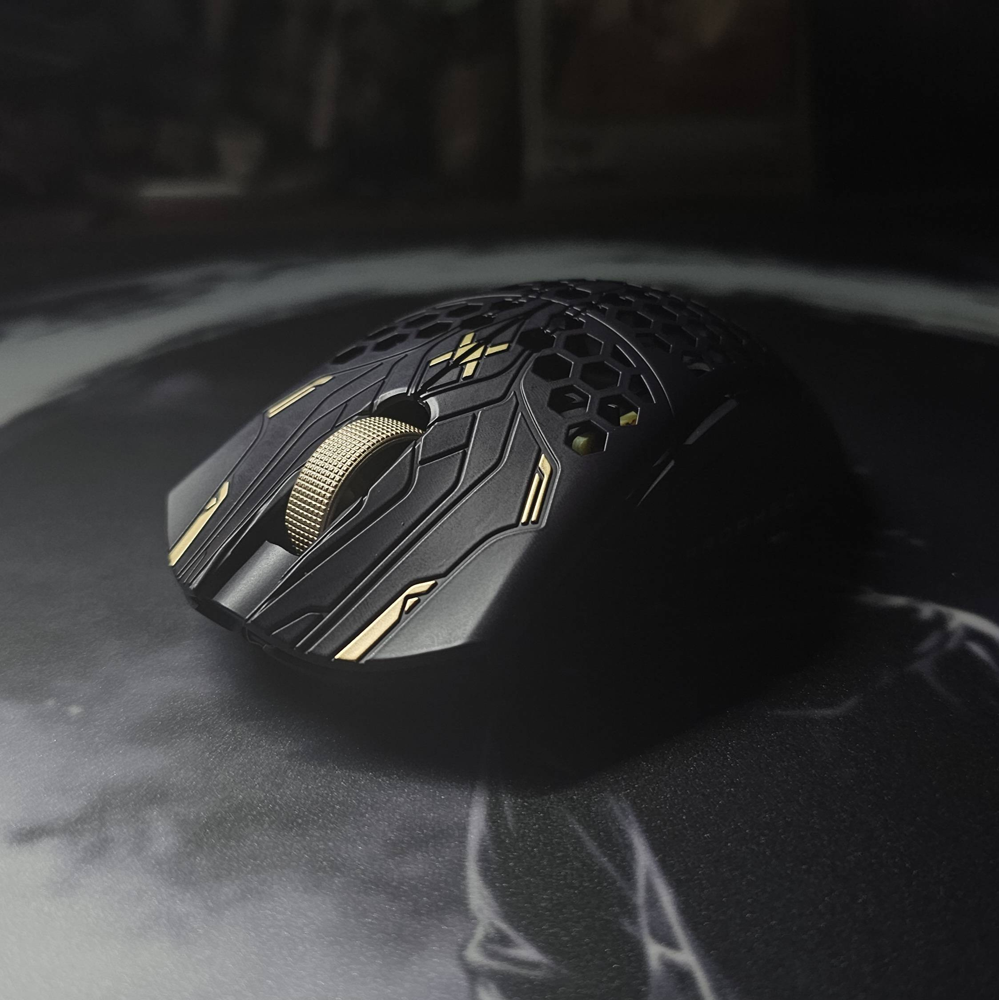

Finalmouse ULX Prophecy
Written by Days
Note: This mouse was sent to me for free, but this will not impact the review in any way. All opinions expressed are my own and represent my honest evaluation of the product.

Finalmouse has established itself as one of the most controversial companies in the peripheral market in recent years. From disappointing product releases and horrible quality control to questionable marketing tactics and consistently delayed shipping, the company has drawn criticism from many enthusiasts. It's almost become a tradition to approach each new Finalmouse release with a healthy dose of skepticism.
But putting all that aside for a moment, today let's focus on the Finalmouse ULX Prophecy. For this review, I got my hands on the medium size variant. The mouse features carbon composite material construction with color schemes determined by the pro player associated with each colorway - in this case, I received the Tfue version.
In this review, I'll be discussing my experience with the mouse and whether you should gamble away $189 on this mouse or not.
Specifications
Here are the key specifications for the Finalmouse ULX Prophecy (Medium size):
Material
Carbon Composite
Switches
Huano Transparent Blue shell Pink dots
Encoder
TTC Dustproof Gold
Shape
The shape of the Finalmouse ULX Prophecy is designed to be ergonomic and comfortable for long gaming sessions. It has a medium size that should fit most hand sizes, and the weight is optimized to be light yet sturdy.
Build Quality
The build quality of the Finalmouse ULX Prophecy feels premium. The carbon composite material not only makes it lightweight but also adds a level of durability. The mouse buttons have a nice tactile feel to them, and the scroll wheel is precise and easy to control.
Performance
Software
The software that comes with the Finalmouse ULX Prophecy is intuitive and easy to use. It allows you to customize the mouse buttons, adjust the DPI settings, and even change the lighting effects. However, some users have reported issues with the software being buggy or not working as intended.
Battery Life
Battery life on the Finalmouse ULX Prophecy is decent, lasting up to 60 hours on a single charge depending on usage. The mouse also features a battery-saving mode that activates when the mouse is not in use.
Conclusion
So, is the Finalmouse ULX Prophecy worth the hype and the price tag? If you're a professional gamer or someone who takes their gaming seriously, this mouse could be a great addition to your setup. However, if you're a casual gamer, you might want to consider whether you really need all the features that come with this mouse.